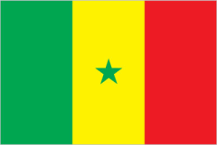

Senegal
Senegal has a rich history and many important discoveries and natural resources. The country is known for its deposits of phosphates, which are used to make fertilizers, as well as gold, iron ore, zircon, and other valuable minerals. Senegal has also developed offshore oil and natural gas fields, which are expected to contribute greatly to its economy.
Historically, Senegal was an important center for trade along the West African coast, especially through Gorée Island, which played a significant role during the transatlantic slave trade. Today, Senegal continues to grow through agriculture, fishing, mining, and tourism.
Cultures
- Traditional Wrestling (Laamb)
- Festivals
- Traditional Foods(Thieboudienne)
- Storytelling